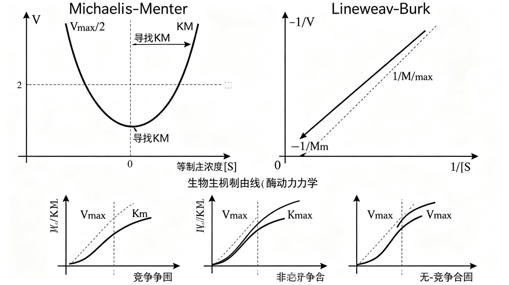

酶动力学、酶活性调节与抑制剂类型
本节是 ch1-1-5 酶 的深度补充，参考张丽萍《生物化学简明教程》第六版第6章 酶（P112-147），针对仅有高中人教版生物学基础的竞赛生重写，详细解释每个概念的反应过程与分子机制。重点内容：
- 酶的概念、特点与化学本质（含核酶 ribozyme）
- 酶的化学组成（脱辅酶 + 辅因子）与结构分类
- EC 编号与 7 大类酶（2018 年新增易位酶类）
- 活性部位的 6 个特点、催化三联体、必需基团
- 同工酶（LDH 五种亚型）
- 酶的专一性与三种学说（锁钥→诱导契合）
- 酶高效催化的 6 种分子机制
- 米氏方程推导 + Lineweaver-Burk 双倒数作图
- 3 类可逆抑制剂 + 温度/pH/激活剂影响
- 酶活性调节：别构调控 + 共价修饰 + 酶原激活
一、酶的概念与特点
酶（Enzyme） 是由活细胞产生的、对底物具有高度特异性和高度催化效率的蛋白质或 RNA。从这个定义可以看出酶的两层含义：
- 酶是催化剂，具有一般催化剂的共性（不改变化学平衡、反应前后数量不变）
- 酶是生物大分子——绝大多数是蛋白质，少数是 RNA（称为核酶 ribozyme）
酶作为生物催化剂有四大特点：
- 高效性：酶催化反应速率比非催化反应高 10⁷~10¹⁷ 倍，比无机催化剂高 10⁷~10¹³ 倍。常用 转换数（turnover number, TN） 表示：每个酶分子单位时间内转换底物的分子数。典型例子：过氧化氢酶 TN ≈ 4000 万/秒，胰凝乳蛋白酶 TN ≈ 100/秒，溶菌酶 TN < 1/秒。
- 专一性：酶只能作用于一类甚至一种特定底物（substrate）。专一性由活性部位的三维结构决定。
- 容易失活：酶对高温、强酸、强碱、高盐等变性条件敏感，因此酶促反应需温和条件（常温、常压、近中性 pH）。
- 酶活性受调控：生物体通过调控酶活性维持代谢平衡、适应生理需要，这是生物体内环境稳态的核心机制之一。
⚠️ 重要概念辨析：酶虽然能加快反应，但不改变反应的平衡常数——正逆反应同倍数加速。反应前后酶分子数量和化学性质不变。这是判别真正催化剂的核心标准。
二、酶的化学本质：蛋白质与核酶
绝大多数酶是蛋白质，催化活性依赖于其蛋白质结构的完整性（变性即失活）。但 1980 年代以来发现核酶（ribozyme）——具有催化能力的 RNA。
核酶的发现（1989 年诺贝尔化学奖）：
- T. R. Cech（1982 年）：研究嗜热四膜虫的 rRNA 前体时发现，在鸟苷与 Mg²⁺ 存在下它能切除自身的内含子，不需要任何蛋白质酶参与。
- S. Altman（1983 年）：研究大肠杆菌 RNase P 时发现，其 RNA 组分（M1 RNA）单独存在时就有催化功能。
常见的核酶有：L19 RNA（Cech 等分离，可催化转核苷酸、水解、转磷酸等分子间反应）、M1 RNA（RNase P 的 RNA 组分）、23S rRNA（核糖体大亚基，催化肽键形成——这是细胞合成蛋白质最核心的化学反应！）。
核酶的发现具有重大意义：① 证明 RNA 也可以是酶；② 推测 RNA 可能是早于 DNA 和蛋白质出现的生物大分子（生命起源"RNA 世界"假说的核心证据）；③ 可设计工具酶用于基因工程。
三、酶的化学组成：脱辅酶 + 辅因子
按化学组成分：
- 单纯蛋白质酶：仅由氨基酸残基组成，如脲酶、淀粉酶、核糖核酸酶、溶菌酶
- 缀合蛋白质酶（全酶 holoenzyme）：脱辅酶（apoenzyme，蛋白质部分） + 辅因子（cofactor），二者结合成全酶才有完整活性
辅因子又分三类：
- 金属离子：Zn²⁺、Fe²⁺、Cu²⁺、Mg²⁺、Mn²⁺ 等（约 1/3 的酶需要金属离子）
- 辅酶（coenzyme）：与脱辅酶结合疏松，可透析除去的小分子有机物，如 NAD⁺、FMN、FAD、磷酸吡哆醛（PLP）、5'-脱氧腺苷钴胺素等
- 辅基（prosthetic group）：与脱辅酶共价或紧密结合，不能透析除去，如 NADH 脱氢酶中的 FMN
辅因子的核心作用是在反应中作为电子、原子或基团的载体——脱辅酶负责结合底物并参与催化，辅因子负责携带电子/基团完成化学反应。
酶的结构分类：
- 单体酶（monomeric enzyme）：一条多肽链，多为水解酶（核糖核酸酶、蔗糖酶、羧肽酶 A）
- 寡聚酶（oligomeric enzyme）：2 个或以上亚基（非共价结合，可同可异），如肌酸激酶（2 相同亚基）、Rubisco（8 大 + 8 小亚基）
- 多酶复合体（multienzyme complex）：几种酶嵌合形成，有利于连续反应中中间产物不扩散，如丙酮酸脱氢酶复合体（60 个亚基，由 3 种酶组成）
四、酶的命名与 EC 编号
酶有两种命名法：
- 习惯命名法：底物 + 反应类型，或加来源（如"唾液淀粉酶"指来自唾液的淀粉酶）
- 系统命名法：底物 + 反应类型，两底物用 ":" 分开，水省略。例如"乙醇脱氢酶"系统名是"乙醇:NAD⁺ 氧化还原酶"；"脂肪酶"系统名是"脂肪(:水)水解酶"
EC 编号（酶学委员会编号）：每一种酶都有唯一的 4 级编号 EC X.X.X.X，由国际酶学委员会（IUBMB）规定：
- 第 1 个数字：酶的类别（1~7）
- 第 2 个数字：亚类
- 第 3 个数字：亚亚类
- 第 4 个数字：亚亚类中的序列号
例：乙醇脱氢酶 EC 1.1.1.1（氧化还原酶类，作用于 CH-OH 受体，受体为 NAD⁺/NADP⁺）。
4.1 七大类酶
| 类别 | 催化反应 | 通式 | 典型例子 |
|---|---|---|---|
| ① 氧化还原酶类 (oxido-reductases) | 氧化还原反应 | A·2H + NAD(P)⁺ ⇌ A + NAD(P)H + H⁺ | 乙醇脱氢酶、葡萄糖氧化酶、过氧化氢酶 |
| ② 转移酶类 (transferases) | 基团转移 | A·X + B ⇌ A + B·X | 丙氨酸氨基转移酶（ALT）、己糖激酶 |
| ③ 水解酶类 (hydrolases) | 水解反应 | A—B + H₂O → AOH + BH | 淀粉酶、蔗糖酶、蛋白酶、脂肪酶 |
| ④ 裂合酶类 (lyases) | 裂解/缩合（涉及双键） | A·B ⇌ A + B | 醛缩酶、色氨酸合酶、碳酸酐酶 |
| ⑤ 异构酶类 (isomerases) | 同分异构体互变 | A ⇌ B | 磷酸丙糖异构酶、肽酰脯氨酰顺反异构酶 |
| ⑥ 合成酶类 (synthetases) | 合成反应（需 ATP 分解） | A + B + ATP ⇌ AB + ADP + Pi | 谷氨酰胺合成酶、氨酰 tRNA 合成酶、DNA 连接酶 |
| ⑦ 易位酶类 (translocases, 2018 新增) | 离子/分子跨膜移动 | — | ATP 合酶、NADH-Q 还原酶、细胞色素氧化酶 |
五、酶的结构与功能
5.1 活性部位（active site）的 6 个特点
活性部位（active site） 又称活性中心（active center），是酶分子中直接与底物结合并催化反应的特定区域。其 6 个共同特点：
- 占比小：体积仅占酶总体积的 1%~2%（类似刀刃）
- 三维结构：由空间上靠近的氨基酸残基组成（在一级结构上可能相距很远，靠折叠聚到一起）——例如溶菌酶活性部位由 6 个氨基酸残基组成，在一级结构中分散分布
- 含特定基团：催化基团（催化反应）+ 结合基团（结合底物）。辅因子也可作催化基团（如丙酮酸脱氢酶的 TPP、转氨酶的 PLP、细胞色素氧化酶的铁卟啉）
- 具有柔性：酶和底物结合时构象发生变化形成互补结构（邹承鲁的研究）
- 位于裂隙中：为底物提供区别于溶剂的疏水微环境
- 与酶整体结构统一：必需基团（essential group）= 维持空间构象必需基团 + 活性部位的催化基团和结合基团
探测酶活性部位的方法：切除法、化学修饰法、X 射线衍射法、定点诱变法。
5.2 催化三联体（catalytic triad）
许多蛋白酶的活性部位由3 个特定氨基酸残基组成，它们在三维空间上紧密靠近但在一级结构上分散分布，通过氢键网络协同工作。经典例子是胰凝乳蛋白酶（chymotrypsin）的催化三联体：
- Ser¹⁹⁵（丝氨酸）——亲核攻击肽键羰基碳
- His⁵⁷（组氨酸）——广义酸碱，传递质子
- Asp¹⁰²（天冬氨酸）——稳定 His⁵⁷ 的正电荷
三者形成电荷中继网（charge relay network），增强 Ser¹⁹⁵ 羟基的亲核性。1967 年 D. Blow 通过 X 射线衍射确定该结构。
化学修饰实验的经典证据：
- DFP（二异丙基氟磷酸）与 Ser¹⁹⁵ 共价结合 → 酶永久失活（DFP 也是神经毒气的成分）
- TPCK（对甲苯磺酰-L-苯丙氨酰氯甲基酮）与 His⁵⁷ 共价结合 → 证明其参与活性部位
5.3 同工酶（isozyme）
同工酶：能催化相同化学反应，但分子结构组成、理化性质、免疫性能和调控特性不同的一组酶。1959 年由 Markert 和 Møller 提出，最早发现的是乳酸脱氢酶（LDH）。
LDH 由 4 个亚基组成，亚基有 M 型（骨骼肌型）和 H 型（心肌型）两种，组合成 5 种同工酶：
| 同工酶 | 亚基组成 | 主要分布 | 电泳位置 | 功能特点 |
|---|---|---|---|---|
| LDH₁ | H₄ | 心肌 | 最靠近阳极 | 有氧环境活力高 |
| LDH₂ | H₃M | 心肌、红细胞 | — | — |
| LDH₃ | H₂M₂ | 肺 | 中间 | — |
| LDH₄ | HM₃ | 肾、胰 | — | — |
| LDH₅ | M₄ | 骨骼肌、肝 | 最靠近阴极 | 低氧环境（厌氧糖酵解）活力高 |
⚠️ 临床应用：心肌受损 → 血清 LDH₁ 升高（心肌酶谱）；肝细胞受损 → 血清 LDH₅ 增高。LDH 同工酶谱分析是临床生化检验的重要项目。
六、酶的专一性
酶的专一性分为两大类：
- 结构专一性：根据酶对底物结构要求的严格程度分：
- 绝对专一性：只作用于一种特定底物（如蔗糖酶只作用于蔗糖，麦芽糖酶只作用于麦芽糖）
- 相对专一性 — 族专一性（基团专一性）：对底物被作用化学键一侧的基团有严格要求（如胰蛋白酶只水解 Lys/Arg 羧基形成的肽键；胰凝乳蛋白酶只水解芳香族氨基酸羧基肽键）
- 相对专一性 — 键专一性：只作用于底物特定化学键，对两端基团无要求（如酯酶催化各种酯键——甘油酯、磷脂、乙酰胆碱等）
- 立体异构专一性：根据酶对底物立体构型的要求分：
- 旋光异构专一性：淀粉酶只水解 D-葡萄糖糖苷键；L-精氨酸酶只催化 L-精氨酸
- 几何异构专一性：延胡索酸水合酶只催化反丁烯二酸（延胡索酸）水合，不顺丁烯二酸（马来酸）
应用：酶的立体异构专一性可制造单一立体异构体药物（制药工业重要）——例如 S-布洛芬比外消旋布洛芬活性更强，可用立体专一性酶拆分。
6.1 酶专一性的三种学说
| 学说 | 提出者 | 时间 | 核心观点 | 局限 |
|---|---|---|---|---|
| 锁与钥匙学说 (lock and key) | E. Fischer | 1894 | 酶与底物结构紧密互补，像锁与钥匙 | 不能解释可逆反应和构象变化 |
| 过渡态互补学说 (transition state) | L. Pauling | 1946 | 底物诱导酶构象变化，二者形成过渡态互补 | 一度缺乏直接实验证据 |
| 诱导契合学说 (induced fit) | D. E. Koshland | 1958 | 底物诱导酶构象变化形成契合，可解释可逆反应 | 未关注底物结构变化 |
1986 年后用底物过渡态类似物制备抗体酶（abzyme, 催化性抗体），证实了过渡态互补学说。诱导契合学说是目前最被广泛接受的说法。
七、酶的作用机制
7.1 活化能原理与中间复合物学说
在反应体系中，反应物必须先进入能量更高的过渡态（transition state）才能转化为产物，基态（ground state）反应物与过渡态之间的能量差就是活化能（activation energy, Ea）。酶通过降低活化能提高反应速率。
中间复合物学说（V. Henri, 1903）：酶促反应中，酶先与底物结合形成不稳定的ES 复合物，再分解为产物和游离酶：
ES 复合物存在的证据：
- 电子显微镜可观察到 ES 复合物
- X 射线晶体结构分析得到 ES 三维结构
- ES 形成后光谱特性变化
- ES 形成后酶的物理性质（溶解性、热稳定性）变化
7.2 酶具有高催化效率的 6 种分子机制
酶与底物通过非共价键（氢键、范德华力、疏水相互作用、盐键）结合，产生结合能（binding energy），结合能用于降低反应活化能。具体机制：
- 邻近效应（approximation）与定向效应（orientation）：酶与底物结合后，游离底物集中于活性部位，减小反应基团距离；底物反应基团和酶催化基团以最有利的距离和角度定位。二者协同可使反应速率升高 10⁸ 倍左右。
- 底物过渡态形成：酶的非共价作用使底物围绕敏感键发生形变（distortion），电子重新分配。酶与底物过渡态的亲和力 >> 酶与底物或产物的亲和力。应用：用底物过渡态类似物做半抗原，制备抗体酶（abzyme, 催化性抗体）——1980 年代由 R. A. Lerner 与 P. G. Schultz 两个研究小组分别制备。
- 酸碱催化（acid-base catalysis）：根据布朗斯特定义，酸=释放质子，碱=接受质子。
- 狭义酸碱催化：水溶液中通过 H⁺ 和 OH⁻ 催化
- 广义酸碱催化：通过 H⁺/OH⁻ 及其他能提供/接受质子的物质（可提高反应速率 10²~10⁵ 倍）
- 共价催化（covalent catalysis）：酶与底物形成相对不稳定的共价中间复合物，改变反应历程，降低活化能。
- 亲核催化：催化剂提供电子攻击底物缺电子中心
- 亲电催化：催化剂吸取电子攻击底物负电中心
- 金属离子催化：5 种作用途径
- 提高水的亲核性能（碳酸酐酶中 Zn²⁺ 与水结合产生 OH⁻）
- 静电屏蔽负电荷（激酶的真正底物是 Mg²⁺-ATP）
- 正电荷稳定过渡态负电荷
- 结合底物为反应定向
- 氧化还原反应中传递电子
- 微环境作用：酶活性部位提供疏水/酸性/碱性等微环境，有利于结合和催化
⚠️ 多元催化：一种酶常是多种催化机制的综合作用，多种机制配合共同起作用——这是酶具有高效性的重要原因。
7.3 实例：胰凝乳蛋白酶的两阶段催化
胰凝乳蛋白酶（chymotrypsin）是丝氨酸蛋白酶家族成员，与胰蛋白酶、弹性蛋白酶同属。其活性部位位于酶表面裂隙中，由Ser¹⁹⁵ - His⁵⁷ - Asp¹⁰² 催化三联体组成。两阶段反应：
- 酰化作用（第一阶段）：
- 底物与酶结合（疏水口袋识别芳香族/大疏水性氨基酸侧链）
- His⁵⁷ 作为广义碱从 Ser¹⁹⁵ 得到质子
- Ser¹⁹⁵ 亲核攻击肽键羰基碳 → 过渡态四面体中间物
- C-N 键断裂 → 释放第一个产物 → 形成酰基-酶共价中间物
- His⁵⁷ 供给质子
- 脱酰作用（第二阶段）：
- 水分子结合到活性部位
- His⁵⁷ 从水分子得质子 → 水亲核攻击羰基碳
- 形成第二个四面体中间物
- 四面体中间物瓦解 → 释放第二个产物 + 游离酶
八、酶促反应动力学
8.1 底物浓度对反应速率的影响
根据中间复合物学说，底物浓度 [S] 对反应速率 v 的影响呈矩形双曲线：
| [S] 范围 | 反应级数 | 特征 | 原因 |
|---|---|---|---|
| [S] 很低 | 一级反应 | v ∝ [S]（直线） | 酶未饱和 |
| [S] 适中 | 混合级反应 | v 增加但非线性 | 部分酶被饱和 |
| [S] 很高 | 零级反应 | v = Vmax（平台） | 酶被饱和 |
8.2 米氏方程（Michaelis-Menten Equation）
1913 年 Michaelis 和 Menten 提出（基于中间复合物学说）：
1925 年 Briggs 和 Haldane 用稳态理论修正（更一般化）：
Km = (k-1 + k2) / k1
v = Vmax·[S] / ([S] + Km)
推导过程（稳态 d[ES]/dt ≈ 0）：
- 中间复合物生成速率 v₁ = k₁·[E][S]
- 中间复合物分解速率 v₂ = (k₋₁ + k₂)·[ES]
- 稳态 v₁ = v₂ → [ES] = [E][S] / ([S] + K_m)
- v = k₂[ES]，代入 [S]→∞ 时 v = V_max = k₂[Eₜ]
- 最终：v = V_max·[S] / ([S] + K_m)
米氏方程三种极限情况：
- [S] ≪ K_m：v ≈ (V_max / K_m)·[S] = K·[S]，一级反应
- [S] ≫ K_m：v ≈ V_max，零级反应
- [S] = K_m：v = V_max / 2，这是 K_m 的物理意义：反应速率为 V_max 一半时的底物浓度
8.3 K_m 和 V_max 的意义
| 参数 | 意义 |
|---|---|
| K_m（米氏常数） | ① 酶的特征物理常数，只与酶的性质有关，与酶浓度无关（单位 mol/L） ② 可鉴别酶以及酶的最适底物（K_m 最小者） ③ 当 k₋₁ ≫ k₂ 时，K_m ≈ K_s，反映酶对底物的亲和力（K_m 大 → 亲和力小） |
| V_max（最大反应速率） | 与酶的性质和酶的浓度都有关（V_max = k₂·[Eₜ]） |
| k_cat（催化常数） | V_max / [Eₜ]，反映酶的转换能力 |
8.4 Lineweaver-Burk 双倒数作图法
对米氏方程取倒数：
以 1/v 对 1/[S] 作图：
- 纵轴截距 = 1/V_max
- 横轴截距 = -1/K_m
- 斜率 = K_m / V_max
双倒数作图是判别抑制剂类型的经典方法（详见下文）。

九、影响酶促反应速率的因素
9.1 抑制剂（最重点）
按结合方式分两大类：
- 不可逆抑制剂：与必需基团共价结合，不可解除（永久失活）。例：青霉素与细菌糖肽转肽酶活性部位 Ser 共价结合 → 抑制细胞壁合成；有机磷农药（DFP 等）抑制乙酰胆碱酯酶
- 可逆抑制剂：非共价结合，透析/超滤可解除。又分 3 类（见下表）
| 类型 | 反应平衡式 | 动力学方程 | 双倒数方程 | Lineweaver-Burk 图特征 |
|---|---|---|---|---|
| 竞争性抑制 (competitive) | E+S⇌ES→P E+I⇌EI | v = V_max[S] / ([S] + αK_m) α = 1 + [I]/K_i | 1/v = (αK_m/V_max)·(1/[S]) + 1/V_max | 直线交于纵轴同一点（V_max 不变，K_m 增大） |
| 非竞争性抑制 (noncompetitive) | E+S⇌ES→P E+I⇌EI ES+I⇌ESI | v = V_max[S] / (α[S] + αK_m) | 1/v = (αK_m/V_max)·(1/[S]) + α/V_max | 直线交于横轴同一点（-1/K_m 不变） |
| 反竞争性抑制 (uncompetitive) | ES+I⇌ESI | v = V_max[S] / (α[S] + K_m) | 1/v = (K_m/V_max)·(1/[S]) + α/V_max | 平行线（斜率不变，纵截距增大） |
9.2 温度
较低温度下反应速率随温度升高而增大（加快分子运动）；超过一定温度后酶因热变性失活，速率下降。呈钟形曲线，顶点为最适温度（optimum temperature）：
- 动物体内酶：35~40℃
- 植物体内酶：40~50℃
- 嗜热菌（如 Taq 酶）：可达 90℃以上（用于 PCR！）
⚠️ 最适温度不是恒定常数，与反应时间、底物等有关（短时间反应最适温度偏高）。
9.3 pH
pH 对酶促反应的影响通过三种途径：
- pH 过高/过低 → 酶高级结构改变（酸/碱变性）
- 影响酶可解离基团的解离状态 → 影响酶与底物结合
- 影响底物和 ES 的解离状态
大多数酶在中性、弱酸或弱碱性范围内最适（植物微生物 4.5~6.5，动物 6.5~8.0）；胃蛋白酶例外（最适 pH = 1.5）。
典型 pH-酶活曲线：多数钟形，木瓜蛋白酶在 pH 4~10 间呈平台（不受 pH 影响）。
9.4 激活剂（activator）
能提高酶活力的物质，多为无机离子或简单有机化合物：
- Mg²⁺：多种激酶和合成酶的激活剂
- Cl⁻：唾液淀粉酶的激活剂
- DTT（二硫苏糖醇）：还原被氧化的酶巯基
- 蛋白酶：激活酶原（如胰蛋白酶激活胰凝乳蛋白酶原）
⚠️ 高浓度激活剂可成为抑制剂；有拮抗作用（Na⁺ 抑制 K⁺，Ca²⁺ 抑制 Mg²⁺）；可互相替代（激酶的 Mg²⁺ 可被 Mn²⁺ 取代）。
十、酶活性的调节
10.1 别构调控（Allosteric Regulation）
别构酶：除活性部位外，还有调节部位（allosteric site），可与某些化合物（效应物 effector）可逆非共价结合，从而改变酶活性。
关键概念：
- 正效应物（positive effector）：别构激活剂，提高酶活性
- 负效应物（negative effector）：别构抑制剂，降低酶活性
- 同促效应：活性部位=调节部位，效应物是底物本身
- 异促效应：活性部位≠调节部位，效应物是非底物分子
- 正协同效应：底物与一个活性部位结合促进其他底物结合（同促正效应）—— 产生 S 形动力学曲线（不是矩形双曲线）
- 负协同效应：底物与一个活性部位结合抑制其他底物结合（同促负效应）
10.2 经典实例：天冬氨酸转氨甲酰酶（ATCase）
ATCase 催化嘧啶合成的第一步反应：
ATCase 同时具有同促效应和异促效应：
- CTP（嘧啶合成的终产物）：别构抑制剂（反馈抑制）—— 终产物抑制限速酶，控制嘧啶合成速度
- ATP：别构激活剂—— 嘌呤核苷酸充足时促进嘧啶合成，平衡两类核苷酸比例
结构：2 个催化三聚体（c₃）+ 3 个调节二聚体（r₂）= 6 个活性部位 + 6 个调节部位
T 态 / R 态模型：
- T 态（tense state）：未结合底物时，酶对底物低亲和力、低活性
- R 态（relaxed state）：结合底物/PALA 后，酶对底物高亲和力、高活性
- T↔R 态平衡由效应物调控：CTP 使平衡偏向 T 态（降低活性），ATP 使偏向 R 态（增强活性）
- 底物与部分活性部位结合即可触发 T→R 转变，导致 S 型动力学曲线
10.3 可逆的共价修饰调节
酶在其他酶催化下，肽链中某些基团发生可逆共价修饰，在活性/非活性形式间互变。修饰类型：
- 磷酸化（最常见）：蛋白激酶催化，蛋白磷酸酶催化逆反应
- 腺苷酰化
- 尿苷酰化
- ADP-核糖基化
- 甲基化
蛋白激酶分类：
- 按底物氨基酸残基：丝氨酸/苏氨酸型激酶、酪氨酸型激酶
- 按是否需调节物：信使依赖性（PKA、PKC、EGF 受体）、非信使依赖性（酪蛋白激酶、组蛋白激酶Ⅱ）
经典实例：糖原磷酸化酶
| 形式 | 状态 | 活力 |
|---|---|---|
| 糖原磷酸化酶 a | Ser¹⁴ 被磷酸化 | 高活力 |
| 糖原磷酸化酶 b | 非磷酸化 | 低活力 |
⚠️ 酶级联放大：少量起始酶分子被激活，依次激活更多酶，最终导致高浓度、高活性效应酶生成 → 细胞信号快速放大。肾上腺素 → 腺苷酸环化酶 → cAMP → PKA → 磷酸化酶激酶 → 糖原磷酸化酶（放大 10⁶~10⁸ 倍）。
10.4 酶原的激活（Activation of Zymogens）
酶原（zymogens）：酶的无活性前体，在特定蛋白水解酶催化下切割肽链，形成活性部位，变成有活性酶（不可逆过程）。
经典实例：胰蛋白酶原激活
- 肠肽酶催化切除 N 端 6 肽（Val-Asp-Asp-Asp-Asp-Lys）
- 剩余多肽构象变化，His⁵⁷、Asp¹⁰²、Ser¹⁹⁵ 互相靠近 → 形成活性部位
- 胰蛋白酶可激活其他消化酶原（胰凝乳蛋白酶原、羧肽酶原、弹性蛋白酶原、脂肪酶原）
- 生理意义：以酶原形式存在保护胰腺细胞不被水解（避免自身消化）
凝血级联反应是酶原激活的经典例子：
- 多种凝血因子以酶原形式存在
- 一种凝血因子的活性形式激活另一种酶原 → 酶级联放大
- 最终激活凝血酶原 → 凝血酶 → 血纤蛋白原 → 血纤蛋白凝块
十一、酶的研究方法与酶工程
11.1 酶活力的测定
酶活力（enzyme activity）：酶催化指定化学反应的能力，用一定条件下酶促反应速率表示（底物减少量或产物增加量）。通常测定产物增加量（从无到有更准确）。
酶活力单位（activity unit）：
- 国际单位（IU）：1961 年规定，特定条件下（25℃、最适 pH、最适离子强度）每分钟催化 1 μmol 底物转化为产物所需的酶量。1 IU = 1 μmol/min
- 比活力（specific activity）：每 mg 酶蛋白所含的酶活力单位数 —— 酶样品纯度指标
常见测定方法：
- 分光光度法：利用底物/产物/指示剂在紫外或可见光部分吸光度变化（例：NADH 在 340 nm 有强光吸收，测 NADH 浓度变化推算乙醇脱氢酶活性）
- 荧光法、同位素测定法、电化学方法
- 酶偶联分析法：将无光吸收的反应 R₁ 与有光吸收的反应 R₂ 偶联（R₂ 产物为 R₁ 底物）
11.2 酶的分离纯化与酶工程
分离纯化方法：盐析、透析、凝胶过滤、离子交换层析、亲和层析等（蛋白质纯化通用方法）。
酶活力保护：① 保持低温（通常 4℃；酶制剂 -20~-80℃ 保存，可用冷冻真空干燥法做固体）；② 温和操作条件（缓冲液 pH 接近最适 pH）；③ 使用保护试剂（金属螯合剂、巯基试剂、蛋白酶抑制剂）；④ 缩短纯化时间。
纯化评估指标：总活力 = 活力单位数/mL × 总体积(mL)；回收率 = 纯化后总活力 / 粗提物总活力 × 100%；纯化倍数 = 纯化后比活力 / 粗提物比活力。
酶工程（Enzyme Engineering）：
- 化学酶工程：天然酶制备 + 酶的化学修饰 + 酶的固定化（5 种方法）：
- 吸附法：物理吸附于支持物
- 共价结合法：酶与支持物共价连接
- 交联法：酶分子间用交联剂
- 凝胶包埋法：包埋于凝胶网格中
- 微胶囊化法：包在半透性微胶囊内
- 生物酶工程：酶学 + 基因重组技术。重组 DNA 技术克隆天然酶基因，微生物中高效表达；定点诱变改造酶基因 → 改造酶 → 改变理化性质与生物功能（如提高催化活力、增加热稳定性）
📌 ch1-1-7 拓展要点 · 本节小结
- 酶的化学本质：绝大多数是蛋白质，少数是核酶（ribozyme）—— 23S rRNA 催化肽键形成是细胞最核心的催化反应。1989 年 Cech 和 Altman 因核酶获诺贝尔化学奖。
- 辅因子三分类：金属离子 + 辅酶（结合疏松，可透析）+ 辅基（结合紧密，不能透析）。记忆：NAD⁺ 是辅酶，FAD 多数情况下是辅基。
- EC 编号 7 大类：氧化还原酶 / 转移酶 / 水解酶 / 裂合酶 / 异构酶 / 合成酶（2018 年新增易位酶）。第 1 位数字即类别号。
- 活性部位 6 特点：占比 1%~2%、三维结构、含特定基团（催化+结合）、有柔性、位于裂隙中、与酶整体结构统一。
- 催化三联体：Ser-His-Asp（如胰凝乳蛋白酶），通过电荷中继网增强 Ser 亲核性。DFP 不可逆抑制所有活性 Ser 蛋白酶。
- LDH 同工酶 5 种：H₄/H₃M/H₂M₂/HM₃/M₄（LDH₁~LDH₅）。心肌 LDH₁ 高，肝/骨骼肌 LDH₅ 高。临床用于心肌/肝损伤诊断。
- 三种专一性学说：Fischer 1894 锁钥匙 → Pauling 1946 过渡态 → Koshland 1958 诱导契合（最被接受）。1986 年用过渡态类似物制备抗体酶（abzyme）验证。
- 6 种催化机制：邻近定向、形变、酸碱催化、共价催化、金属催化、微环境作用。多元催化是酶高效性的关键。
- 米氏方程：v = V_max[S]/([S]+K_m)；K_m = v = V_max/2 时的 [S]；双倒数作图 1/v = (K_m/V_max)·(1/[S]) + 1/V_max。
- 3 类可逆抑制剂：
- 竞争性：V_max 不变，K_m ↑（双倒数图交纵轴）
- 非竞争性：V_max ↓，K_m 不变（双倒数图交横轴）
- 反竞争性：V_max ↓，K_m ↓（双倒数图平行线）
- T/R 态变构模型：T 态（紧态，低活性低亲和）↔ R 态（松态，高活性高亲和）；正协同效应产生 S 形曲线。ATCase 是经典例子（CTP 抑制，ATP 激活）。
- 共价修饰 + 酶原激活：磷酸化最常见；酶原激活是不可逆过程；凝血级联是酶级联放大的经典例子。